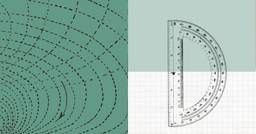
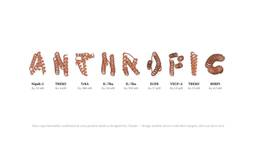
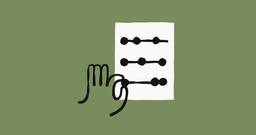
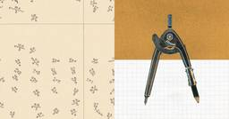

Anthropic Research
https://www.anthropic.com/research
Anthropic is an AI safety and research company that's working to build reliable, interpretable, and steerable AI systems.
フィード

Sep 4, 2026ScienceFormalizing Fermat's Last Theorem 21
21
Anthropic Research
Sep 4, 2026ScienceFormalizing Fermat's Last Theorem
2日前
Aug 28, 2026AlignmentAutomated researchers can reliably mitigate alignment failures 1
Anthropic Research
Aug 28, 2026AlignmentAutomated researchers can reliably mitigate alignment failures
9日前
Aug 26, 2026Societal ImpactsEnabling independent research on how people use Claude 2
Anthropic Research
Aug 26, 2026Societal ImpactsEnabling independent research on how people use Claude
11日前

ScienceAug 18, 2026How Claude is accelerating protein design and analytical chemistryIn this post, we share two results that show how Claude can help life scientists increase the pace of their research. 2
Anthropic Research
ScienceAug 18, 2026How Claude is accelerating protein design and analytical chemistryIn this post, we share two results that show how Claude can help life scientists increase the pace of their research.
19日前

Aug 13, 2026Frontier Red TeamPatterns and problems in emerging multiagent systems 23
Anthropic Research
Aug 13, 2026Frontier Red TeamPatterns and problems in emerging multiagent systems
24日前

EconomicsAug 12, 2026Reviewing the evidence on worker retraining programsWe're sharing a review of the evidence on worker retraining programs, coauthored by independent researcher David Roodman and Anthropic's Maxim Massenkoff.
1
Anthropic Research
EconomicsAug 12, 2026Reviewing the evidence on worker retraining programsWe're sharing a review of the evidence on worker retraining programs, coauthored by independent researcher David Roodman and Anthropic's Maxim Massenkoff.
25日前

Learning more about Claude's mathematical capabilities 19
Anthropic Research
Learning more about Claude's mathematical capabilities
1ヶ月前

Jul 28, 2026Frontier Red TeamDiscovering cryptographic weaknesses with Claude
Anthropic Research
Jul 28, 2026Frontier Red TeamDiscovering cryptographic weaknesses with Claude
1ヶ月前
Jul 24, 2026Frontier Red TeamProject Pilot: Can AI control a drone?
Anthropic Research
Jul 24, 2026Frontier Red TeamProject Pilot: Can AI control a drone?
1ヶ月前
Jul 14, 2026EconomicsHow Canada uses Claude: Findings from the Anthropic Economic Index
Anthropic Research
Jul 14, 2026EconomicsHow Canada uses Claude: Findings from the Anthropic Economic Index
2ヶ月前
InterpretabilityJul 6, 2026A global workspace in language modelsNew interpretability research reveals an emergent mental workspace in Claude that holds internal thoughts that don’t appear in the model’s output.
Anthropic Research
InterpretabilityJul 6, 2026A global workspace in language modelsNew interpretability research reveals an emergent mental workspace in Claude that holds internal thoughts that don’t appear in the model’s output.
2ヶ月前
AlignmentMay 8, 2026Teaching Claude whyNew research on how we've reduced agentic misalignment.
Anthropic Research
AlignmentMay 8, 2026Teaching Claude whyNew research on how we've reduced agentic misalignment.
4ヶ月前